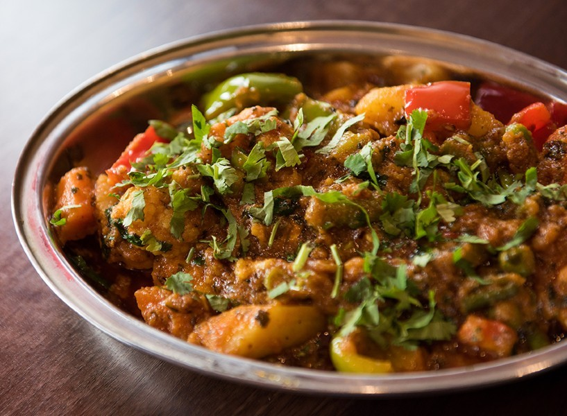

Chana Kulcha
Pohaa, also known as pauwa, sira, chira, or aval, among many other names, is flattened rice originating from the Indian subcontinent.
Gujarati Kadhi
Gujarati kadhi is a Gujarati version of kadhi. It is a very popular Gujarati dish made from buttermilk or dahi and gram flour.

Allahabad Ki Tehri
Allahabadi Tehri Recipe is a very famous rice dish from the state of Uttar Pradesh. It is a one pot meal made using rice and vegetables

Kolhapuri Vegetables
Vegetable kolhapuri is a dish from the city of Kolhapur in Maharashtra, India consisting of mixed vegetables in a thick, spiced gravy. It is served as a main course accompanied by breads such as chapatis